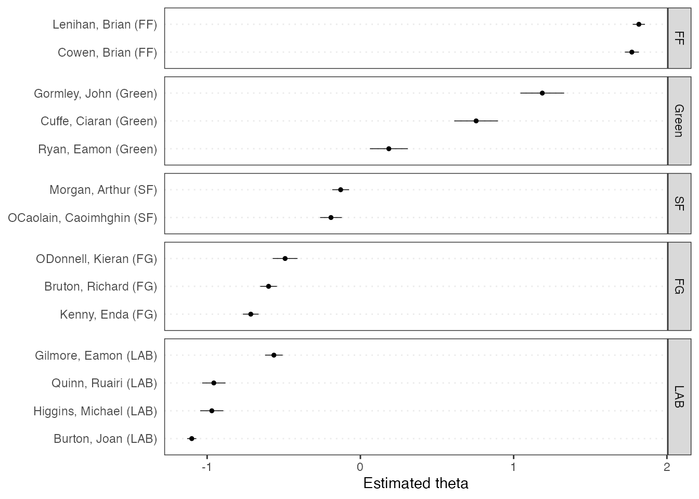

Quickstart: Further Examples
Source:vignettes/pkgdown/quickstart_further_examples.Rmd
quickstart_further_examples.Rmd## Package version: 4.0.0
## Unicode version: 14.0
## ICU version: 71.1## Parallel computing: disabled## See https://quanteda.io for tutorials and examples.Plotting a wordcloud
Plotting a word cloud can be done using the
quanteda.textplots package, for any dfm
class object.
dfmat_uk <- tokens(data_char_ukimmig2010, remove_punct = TRUE) |>
tokens_remove(stopwords("en")) |>
dfm()
# 20 most frequent words
topfeatures(dfmat_uk, 50)## immigration british people asylum britain uk
## 66 37 35 29 28 27
## system population country new immigrants ensure
## 27 21 20 19 17 17
## shall citizenship social national bnp illegal
## 17 16 14 14 13 13
## work percent ethnic must can within
## 13 12 12 12 11 11
## years right borders migrants government children
## 11 11 11 11 10 10
## crime seekers end eu well human
## 10 10 10 10 9 9
## rights control border public figures million
## 9 9 9 9 9 9
## rising future housing citizens take deportation
## 9 9 9 9 8 8
## remain labour
## 8 8
set.seed(100)
library("quanteda.textplots")
textplot_wordcloud(dfmat_uk, min_count = 6, random_order = FALSE,
rotation = .25, max_words = 50,
color = RColorBrewer::brewer.pal(8, "Dark2"))Further examples
Similarities between texts
library("quanteda.textstats")
dfmat_inaug_post1980 <- corpus_subset(data_corpus_inaugural, Year > 1980) |>
tokens(remove_punct = TRUE) |>
tokens_wordstem(language = "en") |>
tokens_remove(stopwords("en")) |>
dfm()
tstat_obama <- textstat_simil(dfmat_inaug_post1980,
dfmat_inaug_post1980[c("2009-Obama", "2013-Obama"), ],
margin = "documents", method = "cosine")
as.list(tstat_obama)
dotchart(as.list(tstat_obama)$"2013-Obama", xlab = "Cosine similarity", pch = 19)/GitHub/quanteda/quanteda/articles/pkgdown/images/fig1.png)
We can use these distances to plot a dendrogram, clustering
presidents.
First, load some data.
data_corpus_sotu <- readRDS(url("https://quanteda.org/data/data_corpus_sotu.rds"))
dfmat_sotu <- corpus_subset(data_corpus_sotu, Date > as.Date("1980-01-01")) |>
tokens(remove_punct = TRUE) |>
tokens_wordstem(language = "en") |>
tokens_remove(stopwords("en")) |>
dfm()
dfmat_sotu <- dfm_trim(dfmat_sotu, min_termfreq = 5, min_docfreq = 3)Now we compute clusters and plot the dendrogram:
# hierarchical clustering - get distances on normalized dfm
tstat_dist <- dfmat_sotu |>
dfm_weight(scheme = "prop") |>
textstat_dist()
# hiarchical clustering the distance object
pres_cluster <- hclust(as.dist(tstat_dist))
# label with document names
pres_cluster$labels <- docnames(dfmat_sotu)
# plot as a dendrogram
plot(pres_cluster, xlab = "", sub = "",
main = "Euclidean Distance on Normalized Token Frequency")/GitHub/quanteda/quanteda/articles/pkgdown/images/fig2.png)
We can also look at term similarities:
tstat_sim <- textstat_simil(dfmat_sotu, dfmat_sotu[, c("fair", "health", "terror")],
method = "cosine", margin = "features")
lapply(as.list(tstat_sim), head, 10)## $fair
## time better far strategi us lower long one practic onli
## 0.8266617 0.8135324 0.8036487 0.8002557 0.8000581 0.7995066 0.7977770 0.7949795 0.7944127 0.7899963
##
## $health
## system issu privat need expand reform support hous dramat mani
## 0.9232094 0.9229859 0.9175231 0.9145142 0.9118901 0.9072380 0.9072374 0.9063870 0.9051588 0.9045851
##
## $terror
## terrorist coalit cheney evil homeland liberti 11th sudden regim septemb
## 0.8539894 0.8179609 0.8175618 0.7949619 0.7878223 0.7697739 0.7603221 0.7556575 0.7533021 0.7502925 Scaling document positions
Here is a demonstration of unsupervised document scaling comparing the “Wordfish” model:
if (require("quanteda.textmodels") && require("quanteda.textplots")) {
dfmat_ire <- tokens(data_corpus_irishbudget2010) |>
dfm()
tmod_wf <- textmodel_wordfish(dfmat_ire, dir = c(2, 1))
# plot the Wordfish estimates by party
textplot_scale1d(tmod_wf, groups = docvars(dfmat_ire, "party"))
}## Loading required package: quanteda.textmodels
Topic models
quanteda makes it very easy to fit topic models as well, e.g.:
if (require("quanteda.textmodels")) {
quant_dfm <- tokens(data_corpus_irishbudget2010, remove_punct = TRUE, remove_numbers = TRUE) |>
tokens_remove(stopwords("en")) |>
dfm()
quant_dfm <- dfm_trim(quant_dfm, min_termfreq = 4, max_docfreq = 10)
quant_dfm
}## Document-feature matrix of: 14 documents, 1,263 features (64.52% sparse) and 6 docvars.
## features
## docs supplementary april said period severe today report
## Lenihan, Brian (FF) 7 1 1 2 3 9 6
## Bruton, Richard (FG) 0 1 0 0 0 6 5
## Burton, Joan (LAB) 0 0 4 2 0 13 1
## Morgan, Arthur (SF) 1 3 0 3 0 4 0
## Cowen, Brian (FF) 0 0 0 4 1 3 2
## Kenny, Enda (FG) 1 4 4 1 0 2 0
## features
## docs difficulties months road
## Lenihan, Brian (FF) 6 11 2
## Bruton, Richard (FG) 0 0 1
## Burton, Joan (LAB) 1 3 1
## Morgan, Arthur (SF) 1 4 2
## Cowen, Brian (FF) 1 3 2
## Kenny, Enda (FG) 0 2 5
## [ reached max_ndoc ... 8 more documents, reached max_nfeat ... 1,253 more features ]Now we can fit the topic model and plot it:
if (require("stm") && require("quanteda.textmodels")) {
set.seed(100)
my_lda_fit20 <- stm(quant_dfm, K = 20, verbose = FALSE)
plot(my_lda_fit20)
}## Loading required package: stm## stm v1.3.7 successfully loaded. See ?stm for help.
## Papers, resources, and other materials at structuraltopicmodel.com